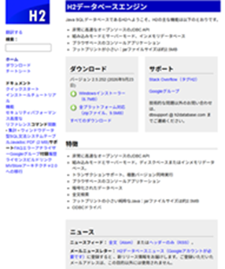
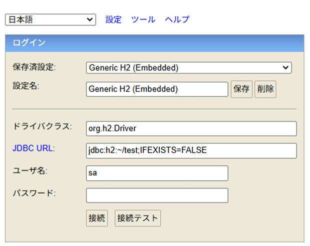
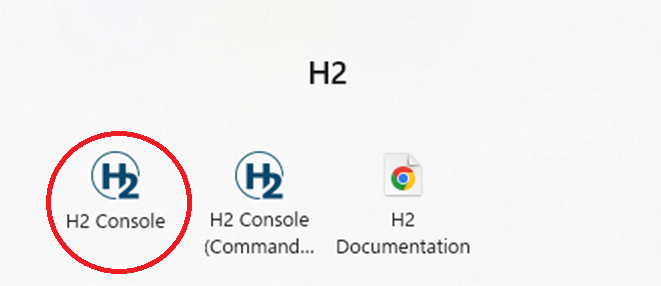
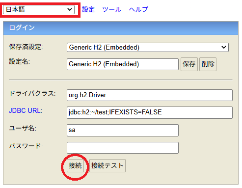
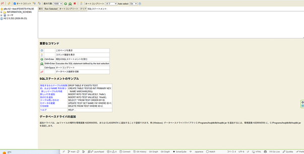

１、H2データベースの概要
【主旨】
H2データベースのダウンロードからユーザーID、パスワードの変更までを解説します。
H2データベースは、Spring Bootのテストに使用するためです。
本格的に運用するなら、MySQL、MariaDB、PostgreSQL、Oracle等を使用することをお勧めします。
H2データベースのダウンロードからユーザーID、パスワードの変更までを解説します。
H2データベースは、Spring Bootのテストに使用するためです。
本格的に運用するなら、MySQL、MariaDB、PostgreSQL、Oracle等を使用することをお勧めします。
H2データベースは、「ローカル開発」「単体・結合テスト」「プロトタイプの作成」において最大の効果を発揮します。
一方で、高負荷が予想される商用サービスの本番環境や、本番DBと完全に同一の挙動が求められるシステムにおいては、最初から本番同等のRDBMS（Dockerコンテナ等を利用）を使用する方が安全です。
一方で、高負荷が予想される商用サービスの本番環境や、本番DBと完全に同一の挙動が求められるシステムにおいては、最初から本番同等のRDBMS（Dockerコンテナ等を利用）を使用する方が安全です。
２，H2データベースのダウンロード・インストール
１，ダウンロード

２，インストール

「Windows によって PC が保護されました」の警告が出た場合、
「詳細情報」をクリックすると、
下に「OK」ボタンが表示されます。
この「OK」ボタンをクリックします。
「詳細情報」をクリックすると、
下に「OK」ボタンが表示されます。
この「OK」ボタンをクリックします。
３，H2データベースの接続

左図の様に設定すればDBに接続できますよ。
４，ユーザーID、パスワードの変更
| １ |
 |
赤○の「H2 Console」を選択してください。 |
| ２ |
 |
左図の様に設定して下さい。 設定が終わったら、一度「接続テスト」を試してみましょう。 うまく接続できれば、今度は、「接続」をクリックしてください。 |
| ３ |
 |
1. パスワードの変更方法
パスワードを変更するには、H2コンソールなどのSQL実行画面から ALTER USER コマンドを実行します。
【SQL構文】
ALTER USER ユーザー名 SET PASSWORD '新しいパスワード';
【実行例（ユーザー sa のパスワードを newpassword に変更する場合）】
ALTER USER sa SET PASSWORD 'newpassword';
パスワードを無くして空（ブランク）にしたい場合は、''（空文字）を指定します。
ALTER USER sa SET PASSWORD '';
2. ユーザーID（ユーザー名）の変更方法
H2データベースには、ユーザー名を直接変更する専用のコマンド（RENAME USER など）は用意されていません。 そのため、ユーザーIDを変更したい場合は、新しいユーザーを作成して古いユーザーを削除する手順をとります。 ユーザーを追加するだけなら、この削除過程は不用です。
１，新しいユーザーを作成する
CREATE USER 新しいユーザー名 PASSWORD 'パスワード';
２，必要に応じて権限を付与する（管理者権限が必要な場合など）
ALTER USER 新しいユーザー名 ADMIN TRUE;
３，古いユーザーを削除する
DROP USER 古いユーザー名; |
| ４ | 実行（Run）」ボタンをクリックします。 | これにより、専用の管理画面はありませんが、実質的にWebブラウザの画面上だけでユーザー情報やパスワードの変更を行うことができます。 |
| ５ | アプリケーション（Spring Boot等）側の設定変更 |
JavaやSpring BootなどからH2データベースに接続している場合、データベース側でパスワードやユーザーIDを変更しただけでは、アプリケーション側から接続できなくなります。
プロジェクトの設定ファイル（例: src/main/resources/application.properties など）に記述されている接続情報も、変更後の内容に必ず更新してください。
spring.datasource.username=新しいユーザー名
spring.datasource.password=新しいパスワード |